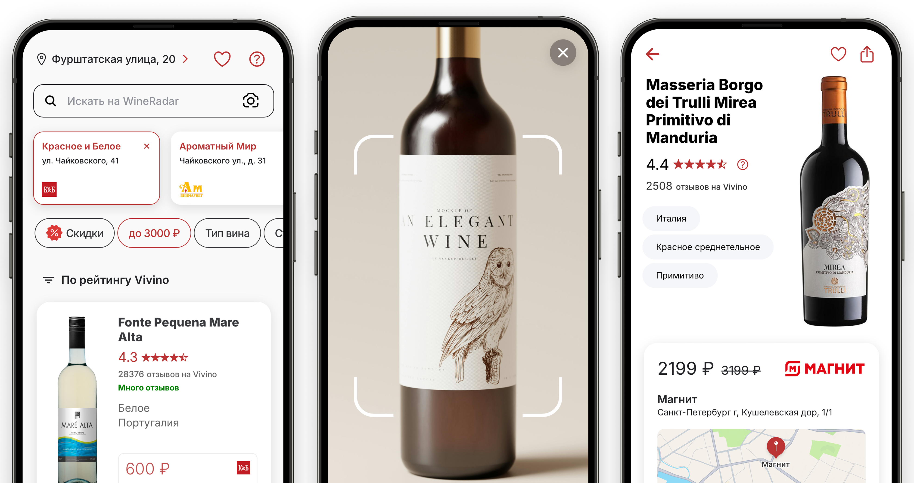
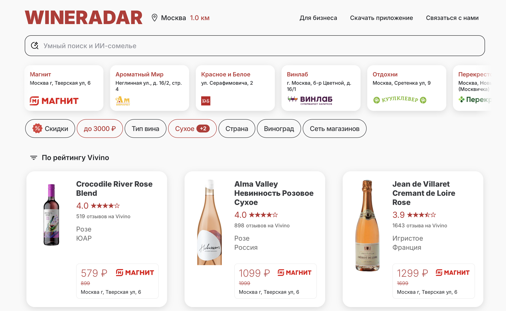

Personal product · Solo frontend
Wineradar
A mobile app for finding wines and tracking their prices, with AI wine suggestions. Built end to end as a solo frontend: UX, Ionic + Capacitor for iOS and Android, and the landing pages around it.
- Role
- UI/UX, mobile app, landings
- Stack
- Ionic · Capacitor · web
- Live
- app.wineradar.ru


Why it looks this way
The job is to decide in a shop aisle, not to browse a wine encyclopedia. Catalog, scan, and price have to sit in one mobile flow.
-
Nearby shops before the grid
Store chips and quick filters sit above the list so you narrow by where you are standing, then by style and budget — not the other way around.
-
Scan is a first-class screen
The camera view is not a hidden utility. It is a full screen with a quiet frame around the bottle, because that is how most people meet a wine they do not know.
-
Detail is price, place, and proof
The product page leads with rating, current price, and the shop on a map. The web catalog repeats the same structure so the system feels like one product, not an app plus a leftover site.